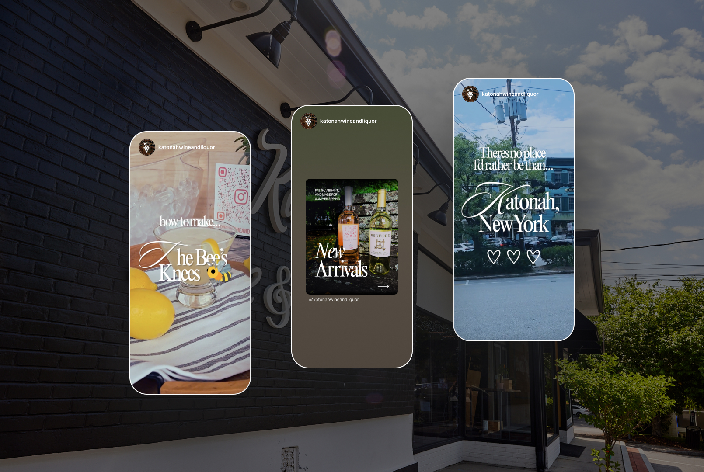
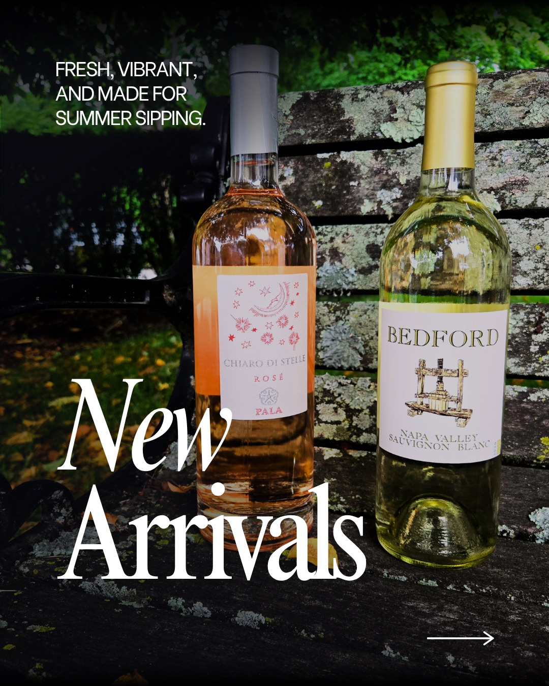
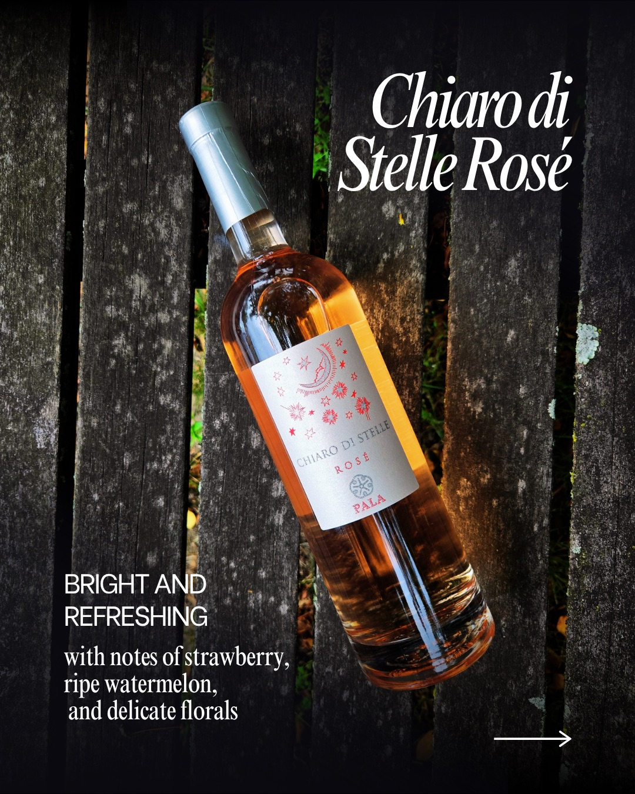
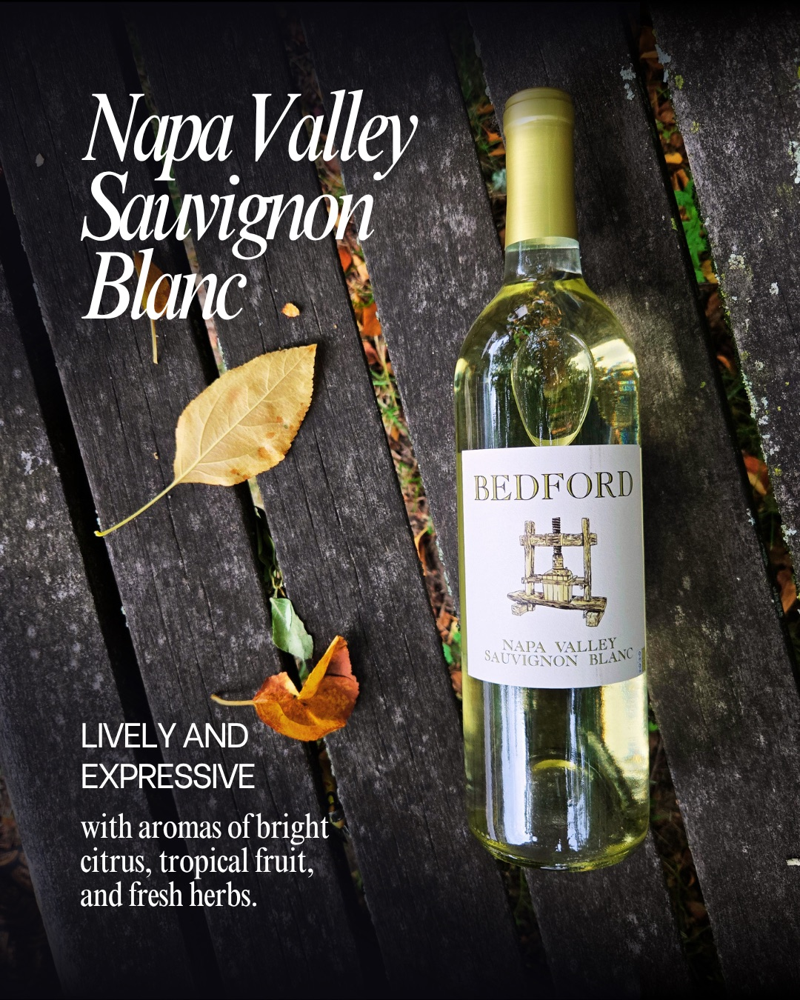
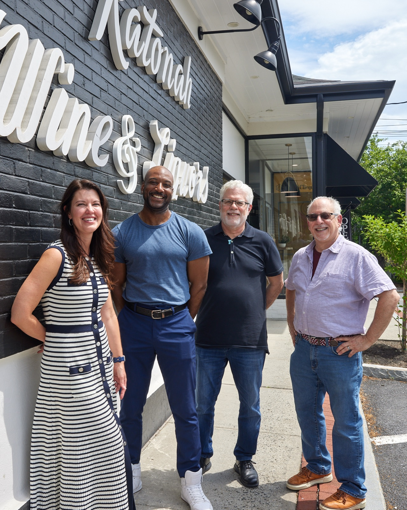
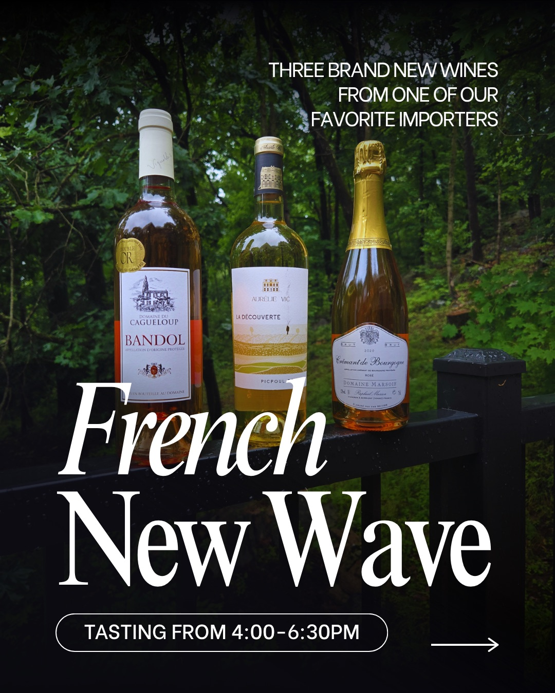
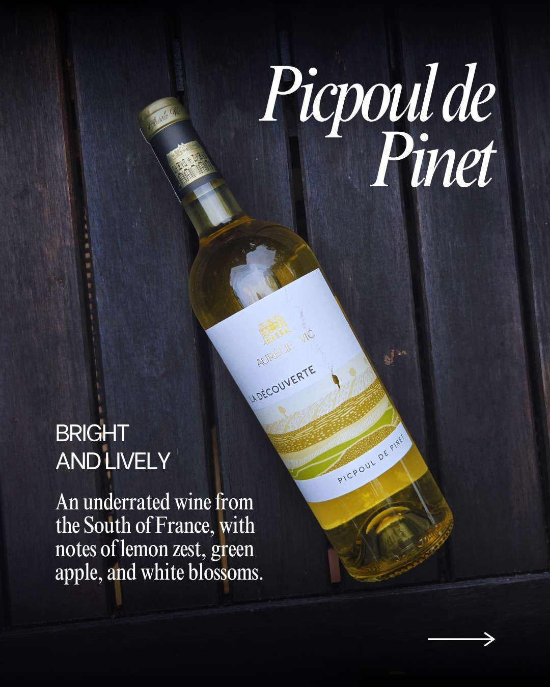
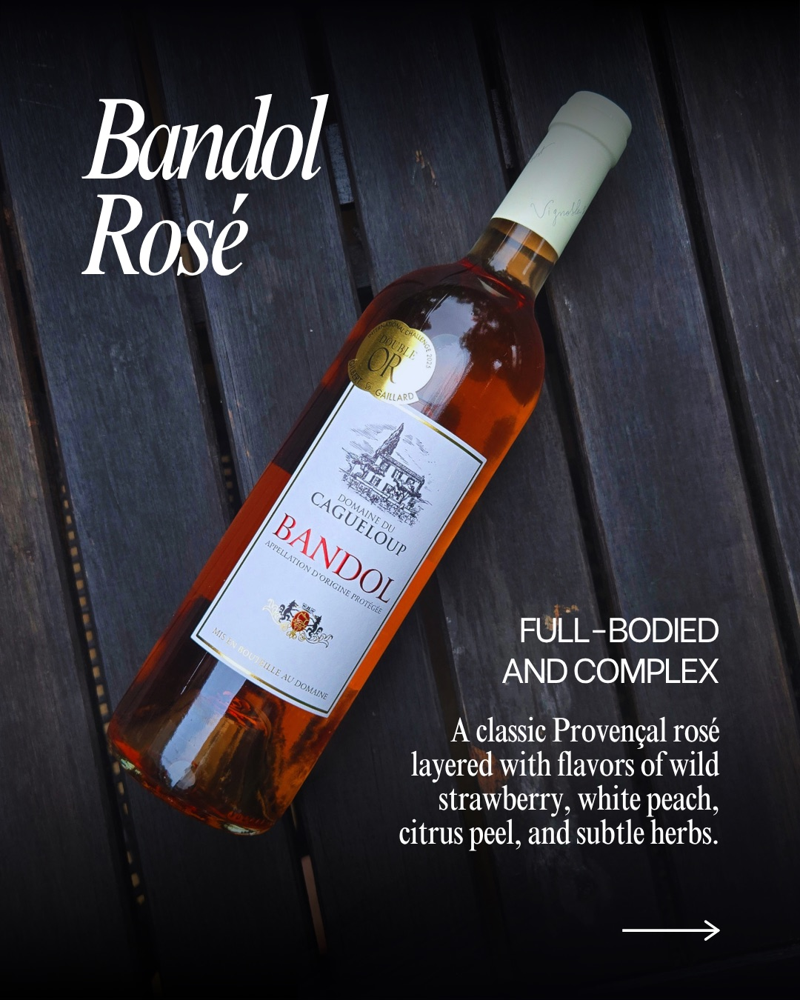

Katonah Wine & Liquor
- Brand Identity
- Content Strategy
- Social Design
Katonah Wine & Liquor is an independent shop competing against chain retailers, delivery apps, and a general assumption that a liquor store is a place you get in and out of. They had a logo and no visual system, no content strategy, and no consistent social presence.



The system
Over 6 weeks I built both halves of the problem: a brand identity system extending their existing logo into something usable across every format, and an Instagram content strategy grounded in research into how independent liquor retailers actually grow. The result is a system the store can run without a designer on staff: templates, pillars, and a posting cadence built for one person with a phone.



